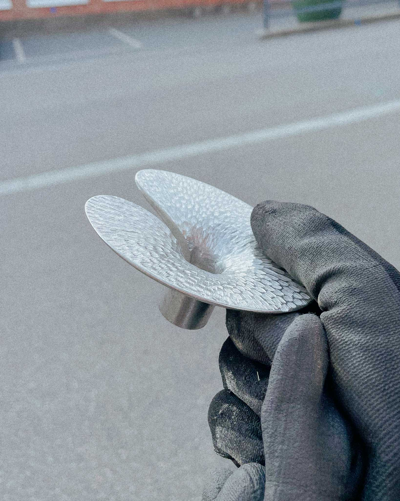

Vattenlilja
Vattenlilja (Water Lily) is a two-part vase for cuttings and small floral arrangements. The glass base is optic-blown to resemble a rippling water surface, while the collar that holds the stems in place is cast in pewter.
- STHLM Glas (Glassblowing)


